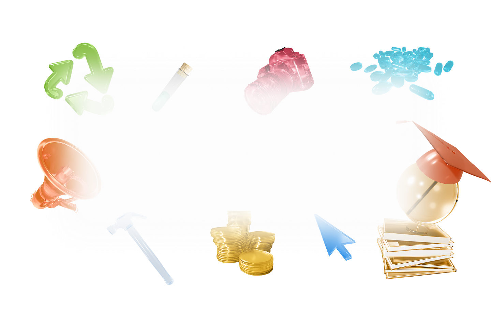

твой ориентир
в мире профессий
твой ориентир
в мире профессий

Мы взяли интервью у представителей разных профессий: поговорили с ними о том, какими качествами важно обладать в их сфере, как она меняется со временем и что, по их мнению, будет ждать специалистов в будущем.
Особое внимание уделили вопросам о влиянии на рабочие процессы развивающихся технологий — мы верим, что именно этот аспект современности изменит многие профессиональные сферы.


Нажмите на профессию, чтобы увидеть интервью